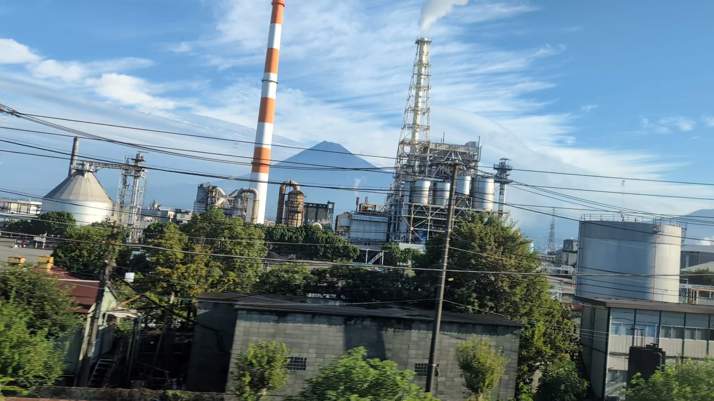
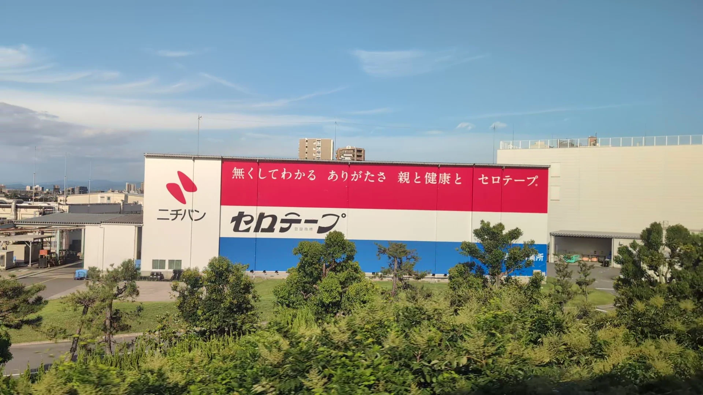
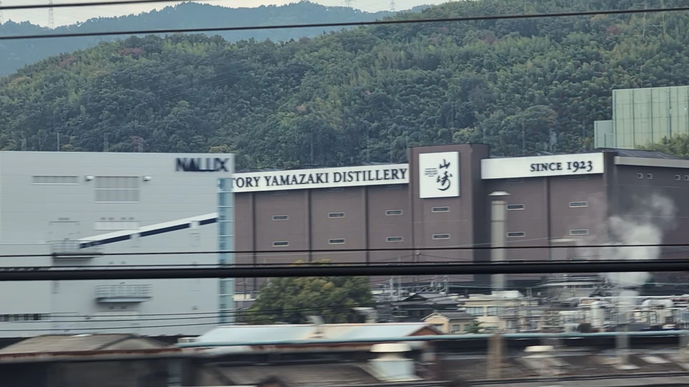

Find them in photos
Coffee, sweets and cosmetics: spot the factories beside the Tokaido Shinkansen with photographs and A-side and E-side window guides.
Mishima → Shin-Fuji
At the foot of Mount Fuji

E-seat sideOn the right in the direction of travel UCC Fuji Factory
A coffee tower beneath Mount Fuji
Look for “UCC COFFEE FUJI” on the white tower. Mount Fuji rises behind this factory, which makes roasted coffee.

E-seat sideOn the right in the direction of travel Nippon Paper Fuji Mill, Fuji site
Everyday paper at Fuji's feet
Red-and-white chimneys with Mount Fuji behind them mark the site. Crecia-Kasuga's Shin-Fuji Mill, within the grounds, makes household paper such as toilet rolls.

E-seat sideOn the right in the direction of travel Koa Kogyo Head Office Factory
A rainbow above the mill at night
This mill makes paper for corrugated cardboard and other uses. The rainbow illumination pictured belongs to a special display for 11–23 November 2026. It is not a regular sight.
Shizuoka → Kakegawa
Yaizu and the Oi River

A-seat sideOn the left in the direction of travel Sapporo Beer Shizuoka Brewery
Shizuoka's local beer, from Yaizu
Look for rows of silver tanks and the star emblem. Shizuoka Bakushu, a beer sold only in Shizuoka, also comes from this brewery in Yaizu.

E-seat sideOn the right in the direction of travel Kibun Foods Shizuoka Factory
The “+S” on a fish-cake packet
Kibun's emblem peeps above a row of red roofs. The factory makes kamaboko and chikuwa fish cakes; the production-site code “+S” on its products identifies this place.
Beside the Oi River railway bridge. Ajinomoto's buildings are on the opposite side of the train.

E-seat sideOn the right in the direction of travel Nestlé Japan Shimada Factory
Coffee names across the river
As the wide riverbed opens up, look toward the hills. The Shimada Factory makes coffee and also uses spent coffee grounds as fuel for its boilers.
Look upstream from the Oi River bridge. The factory is about 1.3 km from the tracks.

A-seat sideOn the left in the direction of travel Ajinomoto Food Manufacturing and Ajinomoto Bakery
Rice porridge and bread yet to bake
The Knorr name stands out on a curved white wall. At this address are Ajinomoto Food Manufacturing's Shizuoka Factory, which makes rice porridge, and Ajinomoto Bakery's Shimada site, which makes frozen bread dough.
Near the Oi River railway bridge, across the tracks from Kibun's red-marked tower.
Sources
- Ajinomoto Food Manufacturing: products made at the Shizuoka Factory (Japanese)
- Ajinomoto Bakery: frozen bread dough production (Japanese)
- Ajinomoto Bakery: the Shimada site's address (Japanese)
The photo identifies the site's exterior. Which production lines occupy the individual buildings has not been confirmed.
Kakegawa → Hamamatsu
Kakegawa, Fukuroi and Hamamatsu

A-seat sideOn the left in the direction of travel Shiseido Kakegawa Factory
Make-up beneath a long white roof
A broad white roof stretches along the tracks. This factory makes make-up products; the roof protects outgoing products from rain, wind and sunlight.

A-seat sideOn the left in the direction of travel Marudai Food Shizuoka Factory
A “+P” that points to Kakegawa
A red Marudai Food emblem rises above the trees, with round windows below it. In 2023, the company featured long wiener sausages made here. The factory's code on packaging is “+P”.
About 4 km from Kakegawa Station toward Hamamatsu. Toward Shin-Osaka, it comes after Shiseido.

A-seat sideOn the left in the direction of travel POLA Chemical Industries Fukuroi Factory
Your own train in the glass
Watch the long glass façade of this cosmetics factory. When the light is right, you may see the Shinkansen you are riding reflected in it.

A-seat sideOn the left in the direction of travel Otsuka Pharmaceutical Fukuroi Factory
A blue wall says Pocari Sweat
A large blue wall marked POCARI SWEAT beyond a green lawn makes this factory easy to spot. It produces drinks including Pocari Sweat.

E-seat sideOn the right in the direction of travel Nitto Kogyo Kakegawa Factory
Boxes that protect electrical equipment
Look for NITO and Nitto Kogyo's name on a white wall. The small cabinets made here are enclosures that house and protect electrical equipment.

E-seat sideOn the right in the direction of travel Unicharm Products Shizuoka Factory
The familiar emblem, in the garden too
Follow the yellow and orange waves along the white wall, then look for a large emblem in the garden. This factory makes baby and adult nappies, sanitary products, cleaning wipes and more.
About 4 km from Kakegawa Station toward Hamamatsu. Toward Shin-Osaka, it comes after Nitto Kogyo.

E-seat sideOn the right in the direction of travel House Foods Shizuoka Factory
Curry, stew and a crunchy snack
Look for the tower bearing House Foods' name. This factory in Fukuroi makes Vermont Curry, Hokkaido Stew and Tongari Corn snacks.

E-seat sideOn the right in the direction of travel Yamaha Motor Fukuroi South Factory
From the railway to the world's seas
Look for red YAMAHA letters and white vertical fins. This factory makes outboard motors: engines fitted to the back of a boat.

E-seat sideOn the right in the direction of travel Teibow Head Office Factory
From felt hats to pen tips
The green TEIBOW sign marks the headquarters and factory of a company whose expertise in processing hat felt led it into making pen tips.
Sources
The current allocation of individual product types to this factory has not been confirmed.
Hamamatsu → Toyohashi
Takatsuka, Lake Hamana and Toyohashi

A-seat sideOn the left in the direction of travel Suzuki Headquarters, Takatsuka
A red S above the rooftops
The red S familiar from Suzuki cars appears above the houses. This is the company's headquarters. Motorcycle-engine production, once based at Takatsuka, moved to Miyakoda in Hamamatsu in 2018.
Near JR Takatsuka Station, between Hamamatsu Station and Lake Hamana. Before the lake toward Shin-Osaka; after it toward Tokyo.

A-seat sideOn the left in the direction of travel Sinfonia Technology Toyohashi Works
A careful journey for silicon wafers
Beyond the lawn, the long wall reads “Toyohashi Works” and “Founded in 1917”. This is a major factory for equipment that moves thin silicon wafers cleanly through the manufacture of chips used in smartphones and other devices.
Miya-cho, Toyohashi, on the Tokyo side of Futagawa Station. Before Toyohashi toward Shin-Osaka; after leaving Toyohashi toward Tokyo.
Sources
- Sinfonia: semiconductor handling equipment and Toyohashi Works (Japanese)
- Sinfonia: Toyohashi Works beside the Shinkansen (Japanese)
- Sogo Hodo: the roughly 70 m sign in Sasashima, Nagoya (Japanese)
- Chuden Clavis: the advertisement on Sasashima's east wall (Japanese)
The same company name can be seen about 800 m south of Nagoya Station. That is a roughly 70 m advertisement on the wall of the Market Square Sasashima shopping complex.
See the Nagoya sign too

Mikawa-Anjo → Nagoya
Anjo

E-seat sideOn the right in the direction of travel Yamazaki Baking Anjo Factory
Breakfast bread beside the tracks
A sun emblem and large red Yamazaki name appear close to the train. Near Mikawa-Anjo, this factory makes bread and Japanese- and Western-style sweets.

E-seat sideOn the right in the direction of travel Nichiban Anjo Factory
A familiar sign, a changing role
The red, white and blue Cellotape sign is easy to recognise. This adhesive-tape factory has also broadened its role into products that support medical care.
Sources
- Nichiban: 2026 annual securities report, p. 37 (Japanese)
- Nichiban: explanation of production restructuring, 2025 (Japanese)
- Nichiban: the wall advertisement visible from the train (Japanese)
The 2026 facilities information lists adhesive tapes for medical support, plus paper and plastic tapes. A 2025 company statement says Cellotape-related production was consolidated in Saitama. The sign alone does not establish that Cellotape is currently made at Anjo.
Nagoya → Gifu-Hashima
Kiyosu

E-seat sideOn the right in the direction of travel Kirin Beer Nagoya Brewery
Tanks like giant glasses of beer
Rows of tanks are painted silver and gold. Look beyond Nagoya toward Shin-Osaka for this brewery in Kiyosu, where Kirin Ichiban is made.
Maibara → Kyoto
Maibara, Hikone and Omi

A-seat sideOn the left in the direction of travel Yanmar Research and Development Center
A large clock just beyond Maibara
A long building carries red YANMAR letters and a large clock. This is the company's central research facility in Maibara, studying engine fuel efficiency and alternative energy.
Just after Maibara toward Shin-Osaka: one account records the view about a minute after departure on a Kodama. Toward Tokyo, look before reaching Maibara.

E-seat sideOn the right in the direction of travel Fujitec Big Wing
Where everyday ups and downs begin
The tall tower is used for elevator research. Factories on the same site make standard and custom elevators, bringing research and production together.

A-seat sideOn the left in the direction of travel Lotte Shiga Factory
Sweets on a very large scale
Large signs show sweets and ice creams. The factory makes products including Yukimi Daifuku ice-cream mochi, Coolish and Toppo. Not every product pictured on the signs is made here.

A-seat sideOn the left in the direction of travel Nissin Foods Shiga Factory
Instant rice comes from here too
Look for the Nissin Foods building in Ritto. It also makes instant rice meals such as Curry Meshi. This is a separate factory from the Kansai Factory across the tracks on the E-seat side.
Kyoto → Shin-Osaka
Yamazaki

E-seat sideOn the right in the direction of travel Suntory Yamazaki Distillery
Whisky's home at the foot of the hills
Look beyond rooftops and overhead wires for the Yamazaki name. This distillery makes the malt whisky used in Yamazaki single malt.
Which side of the train?
A and E refer to the window seats in ordinary-class cars with 3+2 seating. Toward Shin-Osaka, A is on the left and E on the right; toward Tokyo, A is on the right and E on the left. In Green Cars, the D-seat window is on the same side as ordinary-class E. The seat letters stay on the same side of the line when the direction changes.
About the guide and its sources
Roles and products were checked against sources for each site, including company information, in November 2026. A product on a sign is not necessarily made at that factory. The guide also includes Suzuki's headquarters on the former Takatsuka factory site and Yanmar's research centre. Places are grouped by station section, not in exact passing order within each section. Distances are approximate; train speed and light affect the view. Sources marked “Japanese” are in Japanese.
Train-window photographs: michikusa. Decoration on the train pictured at POLA: © Disney.
栗原景『東海道新幹線の車窓は、こんなに面白い！』 — Toyo Keizai, 2016 (Japanese original)